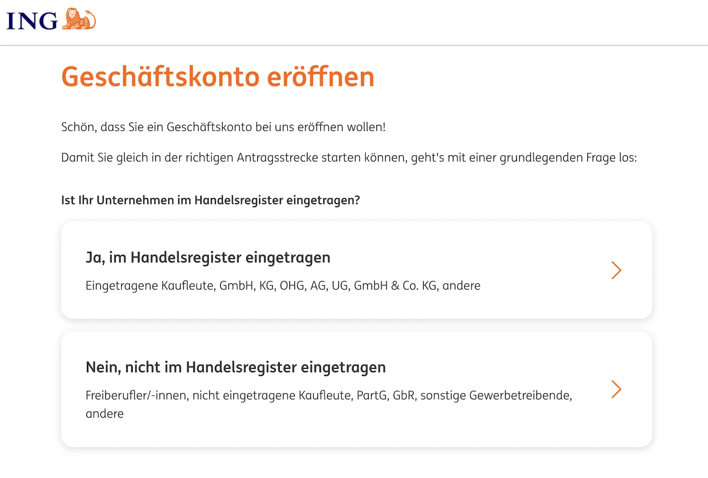

Das Wichtigste: ING Geschäftskonto
- 6 Monate kostenlos: ohne Grundpreis und Buchungskosten; für Gründer im ersten Geschäftsjahr sogar 12 Monate.
- Aktion bis 30.06.2026: bis zu 200 € Gutschrift bei aktiver Nutzung, verteilt auf vier 50-€-Bedingungen.
- Bestpreis-Garantie: Tarif S, M oder L wird monatlich automatisch rückwirkend passend berechnet.
- Einlagensicherung: gesetzlich bis 100.000 € je Kunde plus zusätzlicher Schutz über den BdB-Fonds.
- Bargeld: 3 Abhebungen pro Monat in Deutschland inklusive; Einzahlungen über ReiseBank kostenpflichtig.
- Stärken: VISA Business Debitkarte, Rechnungsmanager, zusätzliche Unterkonten mit IBAN und PSD2-Anbindung für Buchhaltung.
- Schwächen: kein Apple Pay oder Google Pay, kein Dispokredit und keine Nicht-SEPA-Auslandsüberweisungen.
Für wen ist das ING Geschäftskonto geeignet — und für wen nicht?
Das ING Geschäftskonto ist vor allem für digital-affine Selbstständige, Freiberufler und kleinere Unternehmen interessant, die ihr Banking weitgehend online abwickeln und von der Struktur einer Direktbank profitieren wollen. Die automatische Bestpreis-Garantie nimmt dabei die lästige Tarif-Kalkulation ab. Mit dem kostenlosen Rechnungsmanager ist ING inzwischen stärker bei Rechnungen, Belegen und E-Rechnung aufgestellt. Wer hingegen Mobile Payment, ausgeprägte Bargeldfunktionen oder Nicht-SEPA-Zahlungen braucht, stößt aktuell noch an Grenzen.
- Freelancer & Selbstständige — ab 0 € und ohne feste Tarifentscheidung dank Bestpreis-Garantie
- Gründer im ersten Geschäftsjahr — 12 Monate komplett kostenlos und Bonusaktion bei aktiver Nutzung
- Nutzer mit geringem Transaktionsvolumen — Tarif S bleibt dauerhaft günstig
- Intensivnutzer — Tarif L ist bei hohem Volumen attraktiv
- Mobile-Payment-Nutzer — Apple Pay und Google Pay sind noch nicht verfügbar
- Internationale Zahlungen außerhalb SEPA — aktuell nicht möglich
- Mehrere Rechtsformen ausgeschlossen — unter anderem GbR, GmbH & Co. KG und GmbH i.G. werden nicht unterstützt
- Nutzer mit Dispokreditbedarf — kein Dispokredit vorhanden
ING Geschäftskonto: Rechtsformen
Die ING nennt auf ihrer Geschäftskonto-Seite mehrere ausdrücklich unterstützte und nicht unterstützte Rechtsformen. Für e.K., GmbH, UG, OHG und KG ist zusätzlich eine Registrierung bei KYCnow, powered by SCHUFA, vorgesehen.
| Rechtsform | Status | Unterlagen / Hinweis |
|---|---|---|
| Freiberufler, e.K., nicht eingetragene Kaufleute | Möglich |
|
| GmbH, UG, KG, OHG | Möglich |
|
| GbR, GmbH & Co. KG, GmbH i.G., gGmbH, e.V., e.G. | Nicht möglich |
|
ING Geschäftskonto: Kosten & Konditionen
Die wichtigsten Gebühren und Tarifunterschiede stehen in der folgenden Tabelle auf einen Blick. Alle Angaben basieren auf den offiziellen ING-Seiten sowie dem aktuellen Preis- und Leistungsverzeichnis der ING, geprüft am 7. Juni 2026.
| Leistung | TARIF S | TARIF M | TARIF L |
|---|---|---|---|
| Für wen? | Wenige Buchungen, günstigster Einstieg | Mittlere Nutzung, ca. 50–100 Buchungen/Mon. | Intensivnutzer, 100+ Buchungen/Mon. |
| Grundpreis / Monat | 0 € | 4,90 € | 14,90 € |
| Preis je Transaktion | 0,30 € / Buchung | 0,20 € / Buchung | 0,10 € / Buchung |
| Startphase | 6 Monate kostenlos (Gründer im 1. Jahr: 12 Monate) · bis zu 200 € Gutschrift bis 30.06.2026 | ||
| Bestpreis-Garantie | Automatisch monatlich rückwirkend berechnet | ||
| VISA Business Debitkarte | Kostenlos inklusive | Kostenlos inklusive | Kostenlos inklusive |
| Unterkonten | Zusätzliche Unterkonten mit eigener IBAN |
Zusätzliche Unterkonten | Zusätzliche Unterkonten |
| ING-zu-ING Überweisungen | Kostenlos, zählen nicht | Kostenlos, zählen nicht | Kostenlos, zählen nicht |
| Kartenzahlungen (€-Zone) | Kostenlos, zählen nicht | Kostenlos, zählen nicht | Kostenlos, zählen nicht |
| Bargeldabhebung (€-Zone) | 3× kostenlos / Monat | 3× kostenlos / Monat | 3× kostenlos / Monat |
| Fremdwährungsgebühr | 2,20 % außerhalb Euro-Raum | 2,20 % außerhalb Euro-Raum | 2,20 % außerhalb Euro-Raum |
| Bargeldeinzahlung | ReiseBank AG 9,50 € je angefangene 5.000 € |
ReiseBank AG 9,50 € je angefangene 5.000 € |
ReiseBank AG 9,50 € je angefangene 5.000 € |
| PSD2 / DATEV | PSD2, DATEV/Lexware, Rechnungsmanager | PSD2, DATEV/Lexware, Rechnungsmanager | PSD2, DATEV/Lexware, Rechnungsmanager |
| Business Extra-Konto | 3,5 % p.a. für 4 Monate bis 1.000.000 €, danach 1,0 % variabel |
3,5 % p.a. für 4 Monate bis 1.000.000 €, danach 1,0 % variabel |
3,5 % p.a. für 4 Monate bis 1.000.000 €, danach 1,0 % variabel |
| Geschäftskredit | Bis 250.000 € beantragbar | Bis 250.000 € beantragbar | Bis 250.000 € beantragbar |
| Inaktivitätsgebühr | 4,90 €/Monat ab dem 13. Monat bei Inaktivität | ||
| Ablehnungsgebühr | 1,00 € je abgelehnter Buchung (bei Unterdeckung) | ||
| Konto eröffnen | Tarif S → | Tarif M → | Tarif L → |
ING Geschäftskonto: Vor- und Nachteile
- 6 Monate gratis, für Gründer sogar 12 Monate
- Bis zu 200 € Gutschrift bei aktiver Nutzung bis 30.06.2026
- Bestpreis-Garantie mit automatischer Tarifoptimierung
- Rechnungsmanager mit Rechnungen, Belegen, E-Rechnung und Steuerberater-Freigabe
- Zusätzliche Unterkonten mit eigener IBAN
- 3 Bargeldabhebungen gratis pro Monat
- Seit 2025 auch fuer GmbH, KG und OHG offen
- Kein Apple Pay oder Google Pay fuer die Business-Karte
- Keine Auslandsueberweisungen außerhalb SEPA
- Kein Dispokredit direkt im Konto
- Keine integrierte Rechnungsstellung
- Einige Rechtsformen fehlen, etwa GbR oder GmbH & Co. KG
Die ING Bestpreis-Garantie im Detail
Das Alleinstellungsmerkmal des ING Geschäftskontos ist die automatische Tarifoptimierung. Die ING übernimmt die Tarifwahl jeden Monat neu und rückwirkend automatisch, statt dass Kundinnen und Kunden selbst den passenden Tarif für ihr Transaktionsvolumen schätzen müssen.
So funktioniert die Bestpreis-Garantie
Am Monatsende berechnet die ING für alle drei Tarife die Gesamtkosten auf Basis der tatsächlichen Transaktionen und zieht den günstigsten Betrag ab. Kein Antrag, kein Wechsel, keine Kündigung nötig.
Tarif S: 0 € + 67 × 0,30 € = 20,10 €
Tarif M: 4,90 € + 67 × 0,20 € = 18,30 € ← Bestpreis
Tarif L: 14,90 € + 67 × 0,10 € = 21,60 €
→ Automatisch abgerechnet werden 18,30 € (Tarif M).
ING Geschäftskonto: Karten
Jedes ING Geschäftskonto enthält eine kostenlose VISA Business Debitkarte. Kartenzahlungen sind in Deutschland und in Ländern mit Eurowährung kostenlos. In Ländern des EWR mit anderer EWR-Währung sowie in allen anderen Fremdwährungen fällt ein Auslandseinsatzentgelt von 2,20 % an.
- Kontaktloses Bezahlen: Überall wo VISA akzeptiert wird, bis 50 € ohne PIN.
- 3 kostenlose Abhebungen / Monat in Deutschland: In Ländern mit Eurowährung ebenfalls kostenlos. Tageslimit: 1.000 €, Monatslimit: 20.000 €.
- Online-Shopping mit 3D Secure: Überall wo VISA online akzeptiert wird.
- ÖPNV Tap-to-Ride: Kontaktloses Ticketing in vielen deutschen Städten.
- Apple Pay / Google Pay: Noch nicht verfügbar für Business-Karte; Einführung angekündigt.
ING Geschäftskonto: Bargeld & Abhebungen
Das ING Geschäftskonto bleibt beim Bargeld alltagstauglich für gelegentliche Abhebungen, aber deutlich eingeschränkter als klassische Filialbanken bei Einzahlungen.
| Leistung | ING Business |
|---|---|
| Bargeldabhebung in Deutschland | 3 Abhebungen / Monat kostenlos danach laut aktuellem Preisverzeichnis |
| Bargeldabhebung in Euro-Ländern | kostenlos mit VISA Business Debitkarte |
| Tages- / Monatslimit | 1.000 € pro Tag 20.000 € pro Monat |
| Bargeldeinzahlung | über ReiseBank AG möglich bis 25.000 €, keine Münzen |
| Gebühr für Einzahlungen | 9,50 € je angefangene 5.000 € vor der ersten Einzahlung ist eine Selbstauskunft nötig |
| Einordnung | gut für gelegentliche Abhebungen für regelmäßige Bareinzahlungen eher umständlich |
Buchhaltung, DATEV & Softwareintegrationen
Beim ING Geschäftskonto ist der kostenlose Rechnungsmanager inzwischen ein wichtiger Bestandteil: Rechnungen erstellen, Belege digitalisieren, Einnahmen und Ausgaben verfolgen und Unterlagen mit der Steuerberatung teilen. Zusätzlich lassen sich Kontodaten über die PSD2-Schnittstelle mit Buchhaltungs-Tools wie DATEV oder Lexware synchronisieren.
- Rechnungsmanager: Rechnungen, Angebote, Gutschriften, Belege, Auswertungen und Steuerberater-Freigabe direkt im Business Banking Home.
- E-Rechnung: XRechnung/ZUGFeRD und Peppol-Unterstützung laut ING-Rechnungsmanager.
- PSD2-Schnittstelle: Anbindung an Buchhaltungs-Tools wie DATEV oder Lexware möglich.
- Kontowechselservice: Im Business Banking Home verfügbar, Daueraufträge und Zahlungspartner automatisch umziehen.
- Unterkonten als Budget-Trennung: zusätzliche kostenlose Unterkonten mit eigener IBAN, etwa für Steuern, Projekte oder Rücklagen.
Einlagenschutz & Regulierung bei ING
Die ING-DiBa AG ist eine deutsche Bank und als Kreditinstitut durch BaFin und Europäische Zentralbank (EZB) beaufsichtigt. Guthaben auf dem Geschäftskonto sind bis 100.000 € gesetzlich geschützt; zusätzlich ist die ING dem freiwilligen Einlagensicherungsfonds des Bundesverbands deutscher Banken angeschlossen.
| Status | Kreditinstitut / Direktbank |
| Aufsicht | BaFin und Europäische Zentralbank (EZB) |
| Gesetzliche Einlagensicherung | Bis 100.000 € über die EdB |
| Zusätzlicher Schutz | Einlagensicherungsfonds des Bundesverbands deutscher Banken |
Wie eröffne ich ein ING Geschäftskonto?
Die Kontoeröffnung läuft vollständig online und dauert etwa 20 Minuten. Die Identifikation ist per VideoIdent oder PostIdent möglich. Nach erfolgreicher Prüfung teilt die ING die IBAN per verschlüsselter E-Mail mit; die VISA Business Debitkarte folgt per Post.
- Online-Antrag starten: Auf ing.de/business/geschaeftskonto/ den Antrag aufrufen. Unternehmensdaten eingeben: Rechtsform, Name, Adresse, Steuernummer. Für e.K., GmbH, KG und OHG nennt die ING zusätzlich eine Registrierung bei KYCnow, powered by SCHUFA.
- Identifizierung und Prüfung: Folgen Sie den Schritten der ING-Antragsstrecke. Die Identifikation ist per VideoIdent oder PostIdent möglich; für e.K., GmbH, OHG und KG nennt die ING zusätzlich KYCnow als Teil des Eröffnungsprozesses.
- IBAN & Zugang erhalten: Nach Prüfung kommt die IBAN per verschlüsselter E-Mail. Für das Business Banking Home (Online-Banking) erhalten Sie eine separate Einrichtungs-E-Mail. Die VISA Business Debitkarte kommt per Post.
- Optional: Business Extra-Konto eröffnen: Direkt im Business Banking Home. Dafür gelten die jeweils aktuellen Zinskonditionen der ING.
- Optional: Kontowechselservice nutzen: Im Business Banking Home unter „Geschäftskonto → Verwalten → Kontowechselservice" — Zahlungspartner automatisch informieren und Daueraufträge übertragen.

ING Geschäftskonto Fazit 2026
Kurzfazit: stark bei digitalem Kontoalltag, Bestpreis-Modell und kostenlosem Einstieg, schwächer bei Bargeld, internationalem Zahlungsverkehr und ausgebauten Zusatzfunktionen.
Besonders lohnt sich das ING Geschäftskonto 2026 für Freelancer, Selbstständige und kleinere Unternehmen, die eine echte Bank mit schlankem digitalem Kontoalltag suchen und auf Filialservice oder integrierte Buchhaltung verzichten können. Weniger passend ist ING für Unternehmen mit regelmäßigem Bargeldbedarf, Teamfunktionen oder internationalen Anforderungen außerhalb von SEPA, weil hier spezialisierte Alternativen oft weiter sind.
Nicht das Richtige? Diese Alternativen könnten passen
Alle drei Anbieter haben wir ebenfalls getestet — hier die wichtigsten Unterschiede auf einen Blick.

Naheliegend für Selbstständige, die Banking, Rechnungsstellung und Teile der Buchhaltung enger in einer Oberfläche bündeln möchten.
✓ klar softwarezentrierter als ING
× weniger klassische Bankinfrastruktur als ING
Spannend für Unternehmen, die digitales Banking mit Bargeldservices über Postbank und Deutsche Bank verbinden möchten.
✓ günstigerer Einstieg für kleine Unternehmen
× weniger softwarezentriert als ING-Alternativen

Gut für digitale Teams, die Rollen, Karten, Freigaben und strukturierte Prozesse stärker priorisieren als klassische Banklogik.
✓ klarer Software-Fokus
× weniger passend für Nutzer mit Filialbedarf
Alle Konten im großen Vergleich: Geschäftskonto-Vergleich 2026 →
Stand: 7. Juni 2026